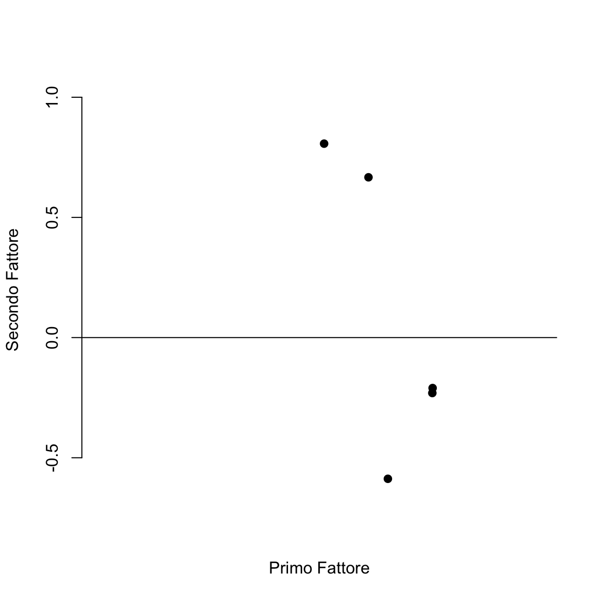
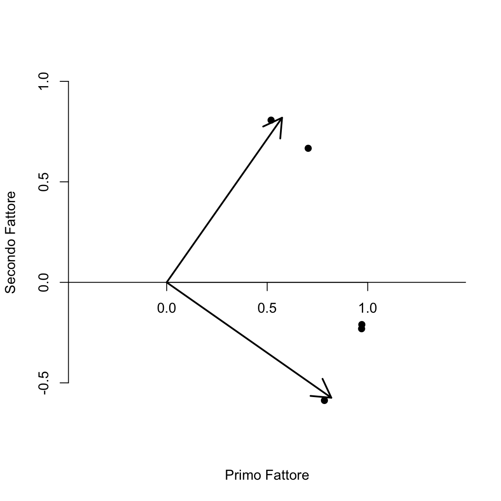
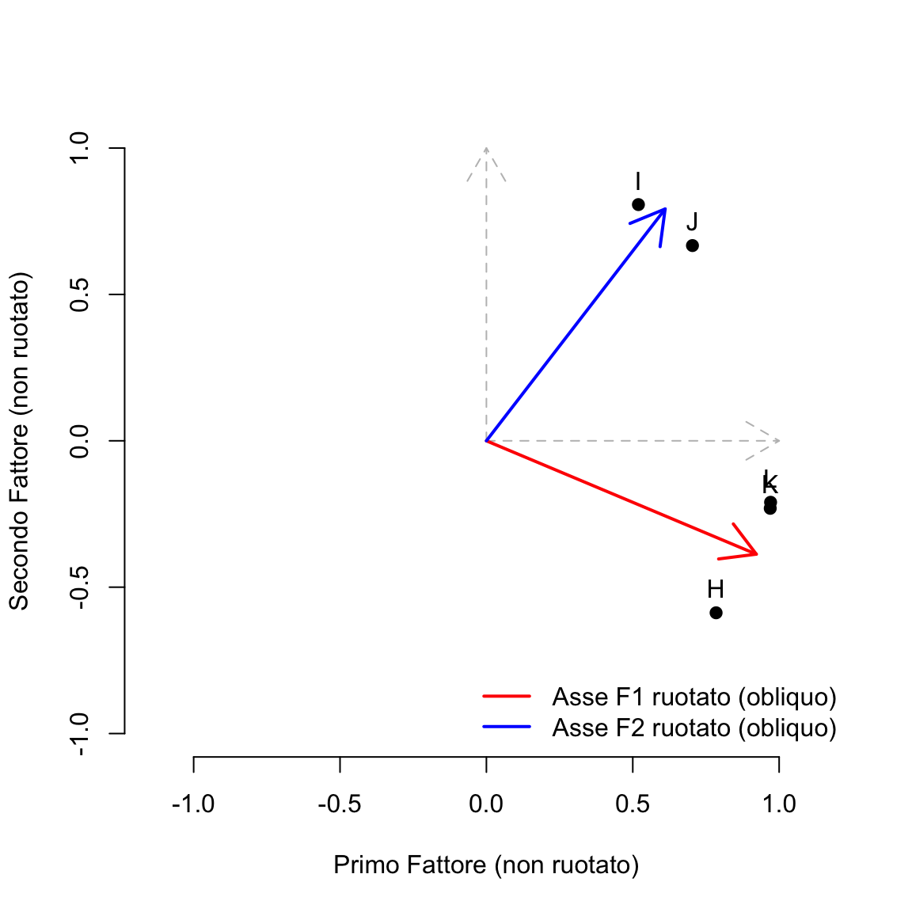

here::here("code", "_common.R") |>
source()
# Load packages
if (!requireNamespace("pacman")) install.packages("pacman")
pacman::p_load(lavaan, psych, GPArotation)29 La rotazione fattoriale
In questo capitolo imparerai:
- come utilizzare la rotazione dei fattori per facilitare l’interpretazione dei risultati dell’analisi fattoriale.
Prerequisiti
- Leggere il capitolo Factor Analysis and Principal Component Analysis del testo di Petersen (2024).
Preparazione del Notebook
29.1 Introduzione
Una volta stabilito il numero ottimale di fattori comuni (come illustrato nel Capitolo 28), ci si trova spesso davanti a una soluzione iniziale non ruotata, che può apparire poco chiara e di difficile interpretazione. A questo punto, per rendere più agevole l’identificazione di un pattern fattoriale interpretabile, è prassi comune procedere a una rotazione degli assi nello spazio dei fattori. Lo scopo principale di questa rotazione è semplificare la struttura delle saturazioni fattoriali, individuando gruppi di variabili che mostrino saturazioni elevate su un singolo fattore e saturazioni molto basse (o nulle) sugli altri.
Tale processo nasce dall’esigenza di affrontare la cosiddetta indeterminatezza rotazionale, ovvero il fatto che, fissato un determinato numero di fattori, sono possibili infinite soluzioni alternative ugualmente in grado di riprodurre la matrice di correlazioni osservata. Per scegliere in modo consapevole tra queste soluzioni si fa ricorso all’idea di “parsimonia”: i fattori vengono ruotati in modo da ottenere la cosiddetta struttura semplice, dove ogni fattore tende a “caricare” nettamente su un sottoinsieme limitato di variabili, facilitandone così l’interpretazione psicologica. In passato, questa operazione veniva eseguita a mano; oggi, si utilizzano metodi automatizzati che rendono molto più rapida l’individuazione di una configurazione fattoriale interpretabile.
29.2 Indeterminatezza della soluzione fattoriale
La necessità di effettuare la rotazione deriva dal fatto che la matrice delle saturazioni non possiede un’unica soluzione. Attraverso trasformazioni matematiche, è possibile ottenere infinite matrici dello stesso ordine, tutte in grado di riprodurre allo stesso modo la matrice di correlazioni originale. Questo fenomeno prende il nome di indeterminatezza della soluzione fattoriale.
In altri termini, la matrice delle saturazioni fattoriali \(\boldsymbol{\Lambda}\) non è univoca, perché una singola matrice di correlazioni \(\boldsymbol{R}\) può dar luogo a più configurazioni fattoriali alternative. Ciò significa che, a parità di numero di fattori, si possono ottenere differenti configurazioni delle saturazioni fattoriali, oppure, in alcuni casi, soluzioni con un diverso numero di fattori comuni ma ugualmente capaci di riprodurre la matrice di correlazioni (o di covarianza) osservata.
29.2.1 Esempio di indeterminatezza con lo stesso numero di fattori
Di seguito, viene mostrato come due diverse matrici di saturazioni (\(\boldsymbol{\Lambda}_1\) e \(\boldsymbol{\Lambda}_2\)) possano restituire la medesima matrice di correlazioni riprodotte, pur avendo la stessa dimensionalità (cioè lo stesso numero di fattori).
# Matrice di saturazioni fattoriali Lambda_1
l1 <- matrix(
c(
0.766, -0.232,
0.670, -0.203,
0.574, -0.174,
0.454, 0.533,
0.389, 0.457,
0.324, 0.381
),
byrow = TRUE, ncol = 2
)
# Matrice di saturazioni fattoriali Lambda_2
l2 <- matrix(
c(
0.783, 0.163,
0.685, 0.143,
0.587, 0.123,
0.143, 0.685,
0.123, 0.587,
0.102, 0.489
),
byrow = TRUE, ncol = 2
)
# Matrici di correlazioni riprodotte da Lambda_1 e Lambda_2
l1 %*% t(l1) |> round(2)
#> [,1] [,2] [,3] [,4] [,5] [,6]
#> [1,] 0.64 0.56 0.48 0.22 0.19 0.16
#> [2,] 0.56 0.49 0.42 0.20 0.17 0.14
#> [3,] 0.48 0.42 0.36 0.17 0.14 0.12
#> [4,] 0.22 0.20 0.17 0.49 0.42 0.35
#> [5,] 0.19 0.17 0.14 0.42 0.36 0.30
#> [6,] 0.16 0.14 0.12 0.35 0.30 0.25
l2 %*% t(l2) |> round(2)
#> [,1] [,2] [,3] [,4] [,5] [,6]
#> [1,] 0.64 0.56 0.48 0.22 0.19 0.16
#> [2,] 0.56 0.49 0.42 0.20 0.17 0.14
#> [3,] 0.48 0.42 0.36 0.17 0.14 0.12
#> [4,] 0.22 0.20 0.17 0.49 0.42 0.35
#> [5,] 0.19 0.17 0.14 0.42 0.36 0.30
#> [6,] 0.16 0.14 0.12 0.35 0.30 0.25Entrambe le matrici di correlazioni riprodotte risultano identiche, pur derivando da matrici di saturazioni diverse.
29.2.2 Esempio di indeterminatezza con un diverso numero di fattori
È possibile mostrare che la stessa matrice di correlazioni riprodotte può derivare anche da soluzioni con un diverso numero di fattori comuni. Consideriamo due matrici \(\boldsymbol{\Lambda}_1\) e \(\boldsymbol{\Lambda}_2\) con lo stesso numero di righe (cioè, con lo stesso numero di variabili manifeste) ma un numero di colonne differente (quindi, un diverso numero di fattori):
# Matrice di saturazioni a 1 fattore
l1 <- matrix(
c(
0.9,
0.7,
0.5,
0.3
),
byrow = TRUE, ncol = 1
)
# Matrice di saturazioni a 2 fattori
l2 <- matrix(
c(
0.78, 0.45,
0.61, 0.35,
0.43, 0.25,
0.25, 0.15
),
byrow = TRUE, ncol = 2
)
# Matrici di correlazioni riprodotte
l1 %*% t(l1) |> round(2)
#> [,1] [,2] [,3] [,4]
#> [1,] 0.81 0.63 0.45 0.27
#> [2,] 0.63 0.49 0.35 0.21
#> [3,] 0.45 0.35 0.25 0.15
#> [4,] 0.27 0.21 0.15 0.09
l2 %*% t(l2) |> round(2)
#> [,1] [,2] [,3] [,4]
#> [1,] 0.81 0.63 0.45 0.26
#> [2,] 0.63 0.49 0.35 0.20
#> [3,] 0.45 0.35 0.25 0.14
#> [4,] 0.26 0.20 0.14 0.08Anche in questo caso, il prodotto delle due nuove matrici restituisce la stessa matrice di correlazioni riprodotte, nonostante \(\boldsymbol{\Lambda}_1\) preveda un solo fattore comune mentre \(\boldsymbol{\Lambda}_2\) ne preveda due.
29.3 Parsimonia e semplicità
Per ovviare al problema dell’indeterminatezza fattoriale, solitamente ci si affida a due criteri fondamentali:
-
Parsimonia: si preferisce il modello con minor numero di fattori che spieghi adeguatamente la covarianza tra le variabili.
- Se più soluzioni con un diverso numero di fattori riproducono parimenti la matrice di correlazione, si sceglie quella con il minor numero di fattori.
- Semplicità: tra diverse soluzioni fattoriali con lo stesso numero \(m\) di fattori, si preferisce la trasformazione (rotazione) che renda i fattori più interpretabili, ossia che abbia il maggior numero possibile di saturazioni nulle o prossime allo zero, e saturazioni elevate concentrate su poche variabili.
Le rotazioni dei fattori possono essere di due tipi:
- ortogonali (i fattori rimangono non correlati tra di loro);
- oblique (i fattori possono essere correlati).
Indipendentemente dal tipo di rotazione, l’obiettivo è rendere più agevole l’interpretazione dei fattori, identificando in maniera più chiara quali variabili “caricano” su ciascun fattore.
29.3.1 Il Criterio della Struttura Semplice nell’Analisi Fattoriale
Thurstone (1947) introdusse il concetto di struttura semplice, un insieme di criteri che mirano a far emergere fattori facilmente interpretabili. In breve, l’ideale di struttura semplice è una configurazione in cui ogni variabile ha saturazioni elevate su un solo fattore (o su pochi fattori) e saturazioni nulle (o molto basse) sugli altri.
Le condizioni fondamentali per una struttura semplice includono:
- ciascuna variabile dovrebbe avere saturazioni prossime allo zero con la maggior parte dei fattori (ad eccezione di uno o pochi di essi);
- per ogni fattore, ci si aspetta di trovare almeno \(m\) saturazioni prossime allo zero (dove \(m\) è il numero di fattori).
Se queste condizioni sono soddisfatte, i fattori risultano di immediata interpretazione: si possono raggruppare le variabili in base alle saturazioni elevate su ciascun fattore, interpretando poi i fattori come caratteristiche o dimensioni psicologiche comuni alle variabili che vi saturano.
29.4 Rotazione nello Spazio Geometrico
29.4.1 Rotazione Ortogonale
La rotazione ortogonale può essere vista come una “rotazione rigida” degli assi in uno spazio cartesiano, in cui si mantengono inalterate le distanze tra i punti (cioè tra le variabili, rappresentate dalle loro saturazioni fattoriali). L’unica cosa che cambia è l’orientamento degli assi stessi.
I metodi di rotazione ortogonale (come Varimax, Quartimax, Equamax, ecc.) cercano di massimizzare la “semplicità” della matrice ruotata, rendendo più evidenti i fattori. In particolare:
-
Varimax massimizza la varianza dei quadrati dei loadings entro ciascun fattore (colonna);
-
Quartimax massimizza la varianza dei loadings entro ogni variabile (riga);
- Equamax cerca un compromesso tra Varimax e Quartimax.
Questo tipo di rotazione si adatta bene quando si ritiene, sulla base di considerazioni teoriche, che i fattori siano incorrelati.
Nella rotazione ortogonale, essendo i fattori mantenuti a 90° l’uno rispetto all’altro, le comunalità rimangono inalterate (perché le distanze geometriche nel diagramma fattoriale non cambiano).
29.4.2 Metodo Grafico per la Rotazione dei Fattori
Quando il numero di fattori \(m=2\), è possibile rappresentare graficamente la soluzione di analisi fattoriale. Ogni variabile manifesta è un punto nello spazio bidimensionale, con coordinate date dalle saturazioni sui due fattori \((\hat{\lambda}_{i1}, \hat{\lambda}_{i2})\).
Esempio (Brown, Williams e Barlow, 1984, discusso in Rencher (2002)):
Una ragazza di dodici anni valuta sette suoi conoscenti su cinque attributi: gentilezza, intelligenza, felicità, simpatia e giustizia. Dalla matrice di correlazione \(R\) di questi attributi, si estrae una soluzione a due fattori con il metodo delle componenti principali, senza rotazione. Spesso, questa soluzione non ruotata ha un primo fattore che “assorbe” gran parte della varianza (saturazioni elevate su tutte le variabili) e un secondo fattore meno chiaro, con saturazioni positive o negative concentrate in modo non facilmente interpretabile.
Tramite una rotazione ortogonale si cerca un angolo \(\phi\) (nel caso di due fattori) che “allinei” i nuovi assi ai punti che rappresentano i dati. Matematicamente, le saturazioni ruotate \(\hat{\boldsymbol{\Lambda}}^*\) si ottengono moltiplicando \(\hat{\boldsymbol{\Lambda}}\) per la matrice di rotazione ortogonale \(\mathbf{T}\), ad esempio:
\[ \mathbf{T} = \begin{bmatrix} \cos{\phi} & -\sin{\phi}\\ \sin{\phi} & \cos{\phi} \end{bmatrix}. \]
Questo approccio grafico è molto intuitivo per \(m=2\), poiché consente di “ruotare” fisicamente un diagramma di dispersione di punti attorno all’origine, in modo da ricavare un sistema di assi più vicino alla cosiddetta “struttura semplice”.
29.4.3 Metodi di rotazione ortogonale
Varimax:
Massimizza la varianza tra i quadrati dei loadings in ciascun fattore. Se i loadings di un fattore sono tutti simili, la varianza dei quadrati è bassa; se invece alcuni loadings sono prossimi a zero e altri prossimi a 1, la varianza è alta, e questo facilita l’interpretazione (un fattore “carica” fortemente solo su certe variabili).Quartimax:
Concentra l’attenzione sulla semplificazione delle variabili (righe di \(\hat{\boldsymbol{\Lambda}}\)) piuttosto che dei fattori (colonne).
Entrambi i metodi, così come altri (Equamax, Orthomax, ecc.), sono disponibili in R attraverso diverse funzioni (factanal(), principal(), factor.pa(), ecc.).
29.4.4 Metodi di Rotazione Obliqua
Si parla di rotazione obliqua quando si consente ai fattori di correlare tra loro. Più precisamente, sarebbe più corretto il termine “trasformazione obliqua” (Rencher, 2002), perché una rotazione in senso geometrico implica il mantenimento dell’ortogonalità degli assi. Tuttavia, in letteratura il termine “rotazione obliqua” è universalmente accettato.
Nei metodi obliqui, gli assi che rappresentano i fattori possono non essere ad angolo retto, così da allinearsi meglio ai “cluster” di variabili che saturano su più fattori correlati. Esistono varie forme di rotazione obliqua (Direct Oblimin, Promax, Geomin, ecc.). Un vantaggio dell’obliquità è che può fornire soluzioni più realistiche in quei casi, molto comuni in psicologia, dove i costrutti latenti sono naturalmente correlati tra loro.
29.5 Matrice dei Pesi Fattoriali e Matrice di Struttura
29.5.1 Rotazione Ortogonale
In presenza di fattori considerati non correlati, la matrice delle saturazioni fattoriali \(\hat{\boldsymbol{\Lambda}}\) coincide, di fatto, con i coefficienti di correlazione tra i fattori e le variabili. Se i fattori sono ortogonali (\(\text{corr}(\xi_1, \xi_2) = 0\)), ciascuna variabile manifesta \(y_i\) è collegata a ciascun fattore \(\xi_j\) tramite un solo percorso: la saturazione fattoriale (in termini di path analysis, è come un coefficiente di regressione). Di conseguenza, le loadings fattoriali si possono interpretare direttamente come i cosiddetti “pesi beta” di regressione (Tabachnick & Fidell, 2001).
29.5.2 Rotazione Obliqua
Se i fattori sono correlati (\(\text{corr}(\xi_1, \xi_2) \neq 0\)), la situazione si complica perché ciascuna variabile manifesta si collegherà a ciascun fattore tramite percorsi diretti e percorsi indiretti (che passano attraverso la correlazione con l’altro fattore). In questo caso, la matrice delle saturazioni fattoriali \(\hat{\boldsymbol{\Lambda}}\) non rappresenta più le semplici correlazioni tra fattori e variabili; occorre distinguere:
Matrice Pattern (\(\hat{\boldsymbol{\Lambda}}\)): contiene i coefficienti di regressione parziali delle variabili manifeste sui fattori. Ciascuna riga della matrice indica quanto una variabile è influenzata “direttamente” da ogni fattore, escludendo l’effetto dell’eventuale correlazione con gli altri fattori.
Matrice di Struttura: contiene le correlazioni tra i fattori e le variabili, includendo sia gli effetti diretti sia quelli indiretti dovuti alla correlazione tra fattori.
Matrice di Intercorrelazione Fattoriale (\(\hat{\boldsymbol{\Phi}}\)): specifica il grado di correlazione tra fattori (per es. \(\phi_{12} = \text{corr}(\xi_1, \xi_2)\)).
In un contesto di rotazione obliqua, l’interpretazione dei fattori richiede di guardare sia alla matrice Pattern (per comprendere gli effetti diretti) sia alla matrice di Struttura (per valutare l’effetto congiunto diretto+indiretto dei fattori sulle variabili).
Di seguito è riportato un esempio pratico per mettere a confronto, in modo sia numerico sia grafico, le soluzioni ortogonali e oblique in un’Analisi Fattoriale Esplorativa (EFA). L’obiettivo è mostrare come cambia la configurazione dei fattori e come, nella soluzione obliqua, i fattori risultino correlati, rendendo necessaria la distinzione tra matrice Pattern e matrice di Struttura.
29.6 Esempio con Metodi Ortogonali e Obliqui in R
Di seguito utilizziamo una piccola matrice di correlazione tratta da un esempio proposto da Rencher (2002). Consideriamo un caso studiato da Brown, Williams e Barlow (1984), analizzato in Rencher (2002). Ad una ragazza di dodici anni è stato chiesto di valutare sette suoi conoscenti su cinque attributi: gentilezza, intelligenza, felicità, simpatia e giustizia. Di seguito è presentata la matrice di correlazione tra le variabili misurate:
R <- matrix(
c(
1.00, .296, .881, .995, .545,
.296, 1.000, -.022, .326, .837,
.881, -.022, 1.000, .867, .130,
.995, .326, .867, 1.000, .544,
.545, .837, .130, .544, 1.00
),
ncol = 5, byrow = TRUE, dimnames = list(
c("K", "I", "H", "L", "J"), c("K", "I", "H", "L", "J")
)
)
print(R)
#> K I H L J
#> K 1.000 0.296 0.881 0.995 0.545
#> I 0.296 1.000 -0.022 0.326 0.837
#> H 0.881 -0.022 1.000 0.867 0.130
#> L 0.995 0.326 0.867 1.000 0.544
#> J 0.545 0.837 0.130 0.544 1.000Eseguiamo l’analisi fattoriale con 2 fattori con il metodo principale (principal). Imponiamo una rotazione ortogonale Varimax:
f1_pc <- principal(R, 2, rotate = "varimax")
f1_pc
#> Principal Components Analysis
#> Call: principal(r = R, nfactors = 2, rotate = "varimax")
#> Standardized loadings (pattern matrix) based upon correlation matrix
#> RC1 RC2 h2 u2 com
#> K 0.95 0.30 0.99 0.0067 1.2
#> I 0.03 0.96 0.92 0.0792 1.0
#> H 0.97 -0.10 0.96 0.0391 1.0
#> L 0.94 0.32 0.99 0.0135 1.2
#> J 0.26 0.93 0.94 0.0597 1.2
#>
#> RC1 RC2
#> SS loadings 2.81 1.99
#> Proportion Var 0.56 0.40
#> Cumulative Var 0.56 0.96
#> Proportion Explained 0.58 0.42
#> Cumulative Proportion 0.58 1.00
#>
#> Mean item complexity = 1.1
#> Test of the hypothesis that 2 components are sufficient.
#>
#> The root mean square of the residuals (RMSR) is 0.03
#>
#> Fit based upon off diagonal values = 1Le saturazioni fattoriali (loadings) mostrano quanto ciascuna variabile sia associata ai due fattori, ma l’angolo tra i fattori è mantenuto a 90°.
Consideriamo ora una rotazione obliqua (Oblimin):
pr_oblimin <- principal(R, 2, rotate = "oblimin")
pr_oblimin
#> Principal Components Analysis
#> Call: principal(r = R, nfactors = 2, rotate = "oblimin")
#> Standardized loadings (pattern matrix) based upon correlation matrix
#> TC1 TC2 h2 u2 com
#> K 0.94 0.17 0.99 0.0067 1.1
#> I -0.08 0.98 0.92 0.0792 1.0
#> H 1.01 -0.25 0.96 0.0391 1.1
#> L 0.93 0.19 0.99 0.0135 1.1
#> J 0.16 0.92 0.94 0.0597 1.1
#>
#> TC1 TC2
#> SS loadings 2.84 1.96
#> Proportion Var 0.57 0.39
#> Cumulative Var 0.57 0.96
#> Proportion Explained 0.59 0.41
#> Cumulative Proportion 0.59 1.00
#>
#> With component correlations of
#> TC1 TC2
#> TC1 1.00 0.26
#> TC2 0.26 1.00
#>
#> Mean item complexity = 1.1
#> Test of the hypothesis that 2 components are sufficient.
#>
#> The root mean square of the residuals (RMSR) is 0.03
#>
#> Fit based upon off diagonal values = 1Qui i fattori possono correlare tra loro: la matrice pr_oblimin$Phi mostra i valori di correlazione tra i due fattori, che risultano diversi da zero. Di conseguenza, la matrice Pattern (che contiene i coefficienti di regressione parziali dei fattori sulle variabili) non coincide con la matrice di Struttura (che riporta le correlazioni fattore-variabile, considerando anche gli effetti indiretti).
Per approfondire:
-
Matrice Pattern (saturazioni parziali)
cbind(pr_oblimin$load[, 1], pr_oblimin$load[, 2]) #> [,1] [,2] #> K 0.94009 0.1685 #> I -0.08425 0.9777 #> H 1.01399 -0.2460 #> L 0.92799 0.1887 #> J 0.15540 0.9182 -
Matrice di inter-correlazione fattoriale (\(\boldsymbol{\Phi}\))
pr_oblimin$Phi #> TC1 TC2 #> TC1 1.0000 0.2562 #> TC2 0.2562 1.0000 -
Matrice di Struttura (correlazioni fattore-variabile)
Di seguito presento due esempi grafici che mostrano come variano i punti (le saturazioni fattoriali) e gli assi quando si effettua una rotazione ortogonale e una rotazione obliqua. In entrambi i casi, si parte dalla stessa soluzione “non ruotata” (unrotated), in cui si dispone dei loadings iniziali su due fattori. Nel grafico, gli assi originali (quelli della soluzione non ruotata) vengono mantenuti e, successivamente, aggiunti gli assi della soluzione ruotata, in modo da evidenziare il cambiamento di orientamento.
Per queste variabili, la matrice di correlazione \(R\) è stata analizzata per estrarre due fattori mediante il metodo delle componenti principali, senza rotazione iniziale. Si osserva che i fattori risultano difficili da interpretare: il primo fattore mostra alte saturazioni positive su tutte le variabili manifeste, mentre il secondo fattore si caratterizza per alte saturazioni positive su una variabile e negative sulle altre.
f.pc <- principal(R, 2, rotate = FALSE)
f.pc
#> Principal Components Analysis
#> Call: principal(r = R, nfactors = 2, rotate = FALSE)
#> Standardized loadings (pattern matrix) based upon correlation matrix
#> PC1 PC2 h2 u2 com
#> K 0.97 -0.23 0.99 0.0067 1.1
#> I 0.52 0.81 0.92 0.0792 1.7
#> H 0.78 -0.59 0.96 0.0391 1.9
#> L 0.97 -0.21 0.99 0.0135 1.1
#> J 0.70 0.67 0.94 0.0597 2.0
#>
#> PC1 PC2
#> SS loadings 3.26 1.54
#> Proportion Var 0.65 0.31
#> Cumulative Var 0.65 0.96
#> Proportion Explained 0.68 0.32
#> Cumulative Proportion 0.68 1.00
#>
#> Mean item complexity = 1.6
#> Test of the hypothesis that 2 components are sufficient.
#>
#> The root mean square of the residuals (RMSR) is 0.03
#>
#> Fit based upon off diagonal values = 1In un grafico delle saturazioni fattoriali, i punti rappresentano le cinque coppie di saturazioni (una per ciascun fattore):
plot(
f.pc$load[, 1], f.pc$load[, 2],
bty = "n", xaxt = "n",
xlab = "Primo Fattore", ylab = "Secondo Fattore",
ylim = c(-.6, 1), xlim = c(0, 1), pch = 19, asp = 1
)
abline(0, 0)
Rencher (2002) suggerisce che una rotazione ortogonale di \(-35^\circ\) avvicinerebbe efficacemente gli assi ai punti nel diagramma di dispersione. Per verificarlo, si può disegnare i nuovi assi nel grafico dopo una rotazione di \(-35^\circ\).
plot(
f.pc$load[, 1], f.pc$load[, 2],
bty = "n", xaxt = "n",
xlab = "Primo Fattore", ylab = "Secondo Fattore",
ylim = c(-.6, 1), xlim = c(0, 1), pch = 19, asp = 1
)
axis(1, pos = c(0, 0))
abline(0, 0)
ar <- matrix(c(
0, 0,
0, 1,
0, 0,
1, 0
), ncol = 2, byrow = TRUE)
angle <- 35
rad <- angle * pi / 180
T <- matrix(c(
cos(rad), -sin(rad),
sin(rad), cos(rad)
), ncol = 2, byrow = TRUE)
round(ar %*% T, 3)
#> [,1] [,2]
#> [1,] 0.000 0.000
#> [2,] 0.574 0.819
#> [3,] 0.000 0.000
#> [4,] 0.819 -0.574
arrows(0, 0, 0.574, 0.819, lwd = 2)
arrows(0, 0, 0.819, -0.574, lwd = 2)
Nella figura, le due frecce rappresentano gli assi ruotati. La rotazione di \(-35^{\circ}\) ha effettivamente avvicinato gli assi ai punti del diagramma. Se usiamo dunque il valore \(\phi = -35^{\circ}\) nella matrice di rotazione, possiamo calcolare le saturazioni fattoriali della soluzione ruotata \(\hat{\boldsymbol{\Lambda}}^* = \hat{\boldsymbol{\Lambda}} \textbf{T}\).
Le saturazioni fattoriali ruotate corrispondono alla proiezione ortogonale dei punti sugli assi ruotati:
La soluzione ottenuta in questo modo riproduce quanto riportato da Rencher (2002).
Nella rotazione obliqua, invece, gli assi dei fattori non sono più perpendicolari: si inclinano per adattarsi meglio ai dati, consentendo ai fattori di essere correlati. Il grafico può quindi mostrare assi non ortogonali.
# Estrai i loadings non ruotati
f_unrot <- principal(R, nfactors = 2, rotate = "none")
L_unrot <- unclass(f_unrot$loadings)
# Calcola la rotazione obliqua e ottieni la matrice T
rot_result <- oblimin(L_unrot) # usa GPArotation
Tmat <- rot_result$Th # matrice di trasformazione obliqua
# Ruota i due assi canonici
e1 <- c(1, 0) # asse F1
e2 <- c(0, 1) # asse F2
# Rotazione degli assi
axis1_rot <- Tmat %*% e1
axis2_rot <- Tmat %*% e2
# Punti: loadings non ruotati
x <- L_unrot[, 1]
y <- L_unrot[, 2]
# Plot
plot(
x, y,
xlab = "Primo Fattore (non ruotato)",
ylab = "Secondo Fattore (non ruotato)",
xlim = c(-1, 1), ylim = c(-1, 1),
asp = 1, pch = 19, bty = "n"
)
text(x, y, labels = rownames(R), pos = 3)
# Assi originali
arrows(0, 0, 1, 0, col = "gray", lty = 2)
arrows(0, 0, 0, 1, col = "gray", lty = 2)
# Assi ruotati
arrows(0, 0, axis1_rot[1], axis1_rot[2], col = "red", lwd = 2)
arrows(0, 0, axis2_rot[1], axis2_rot[2], col = "blue", lwd = 2)
legend("bottomright",
legend = c("Asse F1 ruotato (obliquo)", "Asse F2 ruotato (obliquo)"),
col = c("red", "blue"), lwd = 2, bty = "n"
)
Nel caso presente, l’angolo tra gli assi si discosta poco da 90 gradi
axis1_rot <- Tmat %*% c(1, 0) # asse F1 ruotato
axis2_rot <- Tmat %*% c(0, 1) # asse F2 ruotato
# Calcola l’angolo tra i due vettori ruotati
cos_theta <- sum(axis1_rot * axis2_rot) /
(sqrt(sum(axis1_rot^2)) * sqrt(sum(axis2_rot^2)))
# Assicura che il valore sia nel range [-1, 1] (per evitare errori numerici)
cos_theta <- max(min(cos_theta, 1), -1)
# Calcola l’angolo in radianti
theta_rad <- acos(cos_theta)
# Converti in gradi
theta_deg <- theta_rad * 180 / pi
# Mostra il risultato
theta_deg
#> [1] 75.15ma in altri casi la differenza può essere sostanziale.
29.6.1 Osservazioni
-
Nel caso ortogonale, i fattori restano a 90°: la rotazione è una semplice “rotazione rigida” dello spazio fattoriale. Le comunalità delle variabili non cambiano, e i fattori rimangono incorrelati.
-
Nel caso obliquo, i fattori possono acquisire correlazioni. La matrice di inter-correlazione fattoriale \(\boldsymbol{\Phi}\) presenta valori \(\neq 0\). In questa situazione:
- La matrice Pattern (coeff. di regressione parziali) diverge dalla matrice di Struttura (correlazioni fattore-variabile).
- Geometricamente, gli assi non risultano più ortogonali, né necessariamente di lunghezza unitaria.
- La matrice Pattern (coeff. di regressione parziali) diverge dalla matrice di Struttura (correlazioni fattore-variabile).
Con questi due esempi, si evidenzia in modo sia numerico sia grafico la differenza fra una rotazione ortogonale e una rotazione obliqua: nella prima i fattori vengono “ruotati” ma restano indipendenti, nella seconda emerge la possibilità di correlazione fra i fattori, dando spesso una soluzione più aderente alla realtà psicologica (dove i costrutti latenti sono raramente del tutto indipendenti).
In sintesi, il confronto tra Varimax (ortogonale) e Oblimin (obliqua) mette in luce come l’angolo tra i fattori e le saturazioni delle variabili cambino a seconda che si ipotizzi o meno la presenza di una correlazione tra fattori. Nella soluzione obliqua:
- i fattori risultano correlati, come evidenziato dalla matrice \(\boldsymbol{\Phi}\) con valori \(\neq 0\);
- la matrice Pattern differisce dalla matrice di Struttura, perché le correlazioni tra variabili e fattori includono non solo l’effetto diretto del fattore su una variabile, ma anche gli effetti “indiretti” mediati dalla correlazione con altri fattori.
In pratica, l’uso di una rotazione obliqua è più appropriato quando i costrutti che i fattori misurano sono ragionevolmente attesi come correlati (evento frequente in psicologia). Al contrario, una rotazione ortogonale può risultare utile se si ritiene che i fattori siano realmente indipendenti o se, per esigenze di interpretazione, si preferisce mantenerli tali.
29.7 Esempio con semTools (Geomin, Quartimin, Varimax, ecc.)
Qui si mostra un esempio di uso del pacchetto semTools per l’analisi fattoriale esplorativa (EFA) del classico dataset di Holzinger e Swineford (1939), contenente i punteggi di test di abilità mentale di bambini di seconda e terza media di due diverse scuole. In letteratura, spesso si utilizza un subset di 9 variabili.
Nel nostro esempio, estraiamo 3 fattori utilizzando il metodo mlr:
Maximum likelihood estimation with robust (Huber-White) standard errors and a scaled test statistic that is (asymptotically) equal to the Yuan-Bentler test statistic. For both complete and incomplete data.
- Soluzione non ruotata:
unrotated <- efaUnrotate(
HolzingerSwineford1939,
nf = 3,
varList = paste0("x", 1:9),
estimator = "mlr"
)
out <- summary(unrotated)
print(out)
#> lavaan 0.6-19 ended normally after 217 iterations
#>
#> Estimator ML
#> Optimization method NLMINB
#> Number of model parameters 36
#>
#> Number of observations 301
#>
#> Model Test User Model:
#> Standard Scaled
#> Test Statistic 22.897 23.864
#> Degrees of freedom 12 12
#> P-value (Chi-square) 0.029 0.021
#> Scaling correction factor 0.959
#> Yuan-Bentler correction (Mplus variant)
#>
#> Parameter Estimates:
#>
#> Standard errors Sandwich
#> Information bread Observed
#> Observed information based on Hessian
#>
#> Latent Variables:
#> Estimate Std.Err z-value P(>|z|)
#> factor1 =~
#> x1 (l1_1) 0.653 0.083 7.909 0.000
#> x2 (l2_1) 0.353 0.079 4.481 0.000
#> x3 (l3_1) 0.415 0.086 4.832 0.000
#> x4 (l4_1) 0.926 0.067 13.762 0.000
#> x5 (l5_1) 1.014 0.067 15.176 0.000
#> x6 (l6_1) 0.868 0.062 13.887 0.000
#> x7 (l7_1) 0.283 0.091 3.113 0.002
#> x8 (l8_1) 0.340 0.083 4.095 0.000
#> x9 (l9_1) 0.460 0.078 5.881 0.000
#> factor2 =~
#> x1 (l1_2) 0.349 0.124 2.815 0.005
#> x2 (l2_2) 0.242 0.159 1.523 0.128
#> x3 (l3_2) 0.497 0.132 3.767 0.000
#> x4 (l4_2) -0.337 0.067 -5.058 0.000
#> x5 (l5_2) -0.461 0.077 -6.009 0.000
#> x6 (l6_2) -0.280 0.057 -4.908 0.000
#> x7 (l7_2) 0.372 0.188 1.976 0.048
#> x8 (l8_2) 0.510 0.133 3.831 0.000
#> x9 (l9_2) 0.489 0.066 7.416 0.000
#> factor3 =~
#> x1 (l1_3) -0.338 0.103 -3.275 0.001
#> x2 (l2_3) -0.405 0.092 -4.401 0.000
#> x3 (l3_3) -0.404 0.120 -3.355 0.001
#> x4 (l4_3) 0.049 0.098 0.503 0.615
#> x5 (l5_3) 0.122 0.105 1.154 0.248
#> x6 (l6_3) -0.000 0.076 -0.003 0.998
#> x7 (l7_3) 0.609 0.125 4.863 0.000
#> x8 (l8_3) 0.409 0.143 2.853 0.004
#> x9 (l9_3) 0.112 0.123 0.915 0.360
#>
#> Covariances:
#> Estimate Std.Err z-value P(>|z|)
#> factor1 ~~
#> factor2 0.000
#> factor3 0.000
#> factor2 ~~
#> factor3 0.000
#>
#> Variances:
#> Estimate Std.Err z-value P(>|z|)
#> factor1 1.000
#> factor2 1.000
#> factor3 1.000
#> .x1 0.696 0.113 6.184 0.000
#> .x2 1.035 0.106 9.803 0.000
#> .x3 0.692 0.097 7.132 0.000
#> .x4 0.377 0.053 7.170 0.000
#> .x5 0.403 0.064 6.303 0.000
#> .x6 0.365 0.046 7.984 0.000
#> .x7 0.594 0.148 4.014 0.000
#> .x8 0.479 0.099 4.842 0.000
#> .x9 0.551 0.065 8.518 0.000
#>
#> Constraints:
#> |Slack|
#> 0-(1_2*1_1+2_2*2_1+3_2*3_1+4_2*4_1+5_2*5_ 0.000
#> 0-(1_3*1_1+2_3*2_1+3_3*3_1+4_3*4_1+5_3*5_ 0.000
#> 0-(1_3*1_2+2_3*2_2+3_3*3_2+4_3*4_2+5_3*5_ 0.000- Rotazione ortogonale Varimax:
out_varimax <- orthRotate(
unrotated,
method = "varimax"
)
summary(out_varimax, sort = FALSE, suppress = 0.3)
#> Standardized Rotated Factor Loadings
#> factor1 factor2 factor3
#> x1 0.320* 0.607*
#> x2 0.481*
#> x3 0.662*
#> x4 0.838*
#> x5 0.867*
#> x6 0.815*
#> x7 0.695*
#> x8 0.704*
#> x9 0.409* 0.511*
#>
#> Factor Correlation
#> factor1 factor2 factor3
#> factor1 1 0 0
#> factor2 0 1 0
#> factor3 0 0 1
#>
#> Method of rotation: varimax
#>
#> Test Statistics for Standardized Rotated Factor Loadings
#> lhs op rhs std.loading se z p ci.lower ci.upper
#> 1 factor1 =~ x1 0.320 0.055 5.799 0.000 0.212 0.428
#> 2 factor1 =~ x2 0.135 0.063 2.151 0.031 0.012 0.259
#> 3 factor1 =~ x3 0.080 0.049 1.622 0.105 -0.017 0.176
#> 4 factor1 =~ x4 0.838 0.028 30.193 0.000 0.784 0.892
#> 5 factor1 =~ x5 0.867 0.024 36.189 0.000 0.820 0.914
#> 6 factor1 =~ x6 0.815 0.024 33.939 0.000 0.768 0.862
#> 7 factor1 =~ x7 0.102 0.049 2.058 0.040 0.005 0.199
#> 8 factor1 =~ x8 0.078 0.048 1.617 0.106 -0.016 0.172
#> 9 factor1 =~ x9 0.170 0.053 3.222 0.001 0.067 0.273
#> 10 factor2 =~ x1 0.607 0.075 8.138 0.000 0.461 0.753
#> 11 factor2 =~ x2 0.481 0.067 7.184 0.000 0.350 0.612
#> 12 factor2 =~ x3 0.662 0.058 11.499 0.000 0.549 0.775
#> 13 factor2 =~ x4 0.113 0.043 2.615 0.009 0.028 0.198
#> 14 factor2 =~ x5 0.032 0.040 0.802 0.422 -0.047 0.111
#> 15 factor2 =~ x6 0.162 0.042 3.855 0.000 0.079 0.244
#> 16 factor2 =~ x7 -0.062 0.047 -1.341 0.180 -0.154 0.029
#> 17 factor2 =~ x8 0.174 0.082 2.117 0.034 0.013 0.336
#> 18 factor2 =~ x9 0.409 0.079 5.173 0.000 0.254 0.564
#> 19 factor3 =~ x1 0.130 0.066 1.978 0.048 0.001 0.259
#> 20 factor3 =~ x2 -0.041 0.071 -0.578 0.563 -0.179 0.098
#> 21 factor3 =~ x3 0.113 0.049 2.324 0.020 0.018 0.209
#> 22 factor3 =~ x4 0.077 0.040 1.916 0.055 -0.002 0.155
#> 23 factor3 =~ x5 0.070 0.042 1.669 0.095 -0.012 0.153
#> 24 factor3 =~ x6 0.066 0.038 1.715 0.086 -0.009 0.141
#> 25 factor3 =~ x7 0.695 0.092 7.591 0.000 0.516 0.875
#> 26 factor3 =~ x8 0.704 0.083 8.520 0.000 0.542 0.865
#> 27 factor3 =~ x9 0.511 0.065 7.885 0.000 0.384 0.638- Rotazione ortogonale Quartimin:
out_quartimin <- orthRotate(
unrotated,
method = "quartimin"
)
summary(out_quartimin, sort = FALSE, suppress = 0.3)
#> Standardized Rotated Factor Loadings
#> factor1 factor2 factor3
#> x1 0.353* 0.590*
#> x2 0.474*
#> x3 0.657*
#> x4 0.844*
#> x5 0.869*
#> x6 0.823*
#> x7 0.692*
#> x8 0.702*
#> x9 0.397* 0.508*
#>
#> Factor Correlation
#> factor1 factor2 factor3
#> factor1 1 0 0
#> factor2 0 1 0
#> factor3 0 0 1
#>
#> Method of rotation: Quartimin
#>
#> Test Statistics for Standardized Rotated Factor Loadings
#> lhs op rhs std.loading se z p ci.lower ci.upper
#> 1 factor1 =~ x1 0.353 0.062 5.720 0.000 0.232 0.473
#> 2 factor1 =~ x2 0.158 0.066 2.375 0.018 0.028 0.288
#> 3 factor1 =~ x3 0.115 0.057 2.015 0.044 0.003 0.226
#> 4 factor1 =~ x4 0.844 0.027 30.814 0.000 0.790 0.898
#> 5 factor1 =~ x5 0.869 0.023 37.224 0.000 0.823 0.914
#> 6 factor1 =~ x6 0.823 0.024 35.026 0.000 0.777 0.869
#> 7 factor1 =~ x7 0.116 0.054 2.161 0.031 0.011 0.222
#> 8 factor1 =~ x8 0.104 0.054 1.914 0.056 -0.003 0.210
#> 9 factor1 =~ x9 0.202 0.059 3.403 0.001 0.086 0.319
#> 10 factor2 =~ x1 0.590 0.078 7.523 0.000 0.436 0.743
#> 11 factor2 =~ x2 0.474 0.068 6.935 0.000 0.340 0.608
#> 12 factor2 =~ x3 0.657 0.059 11.204 0.000 0.542 0.771
#> 13 factor2 =~ x4 0.072 0.041 1.748 0.080 -0.009 0.152
#> 14 factor2 =~ x5 -0.010 0.039 -0.263 0.793 -0.087 0.066
#> 15 factor2 =~ x6 0.122 0.040 3.008 0.003 0.042 0.201
#> 16 factor2 =~ x7 -0.071 0.048 -1.465 0.143 -0.166 0.024
#> 17 factor2 =~ x8 0.167 0.090 1.849 0.064 -0.010 0.343
#> 18 factor2 =~ x9 0.397 0.087 4.581 0.000 0.227 0.567
#> 19 factor3 =~ x1 0.124 0.071 1.740 0.082 -0.016 0.264
#> 20 factor3 =~ x2 -0.042 0.074 -0.574 0.566 -0.187 0.102
#> 21 factor3 =~ x3 0.114 0.054 2.093 0.036 0.007 0.221
#> 22 factor3 =~ x4 0.056 0.037 1.503 0.133 -0.017 0.128
#> 23 factor3 =~ x5 0.048 0.038 1.263 0.207 -0.027 0.123
#> 24 factor3 =~ x6 0.046 0.034 1.347 0.178 -0.021 0.112
#> 25 factor3 =~ x7 0.692 0.093 7.477 0.000 0.511 0.874
#> 26 factor3 =~ x8 0.702 0.084 8.331 0.000 0.537 0.867
#> 27 factor3 =~ x9 0.508 0.070 7.298 0.000 0.371 0.644- Rotazione obliqua Quartimin:
out_oblq <- oblqRotate(
unrotated,
method = "quartimin"
)
summary(out_oblq, sort = FALSE, suppress = 0.3)
#> Standardized Rotated Factor Loadings
#> factor1 factor2 factor3
#> x1 0.602*
#> x2 0.505*
#> x3 0.689*
#> x4 0.840*
#> x5 0.888*
#> x6 0.808*
#> x7 0.723*
#> x8 0.702*
#> x9 0.366* 0.463*
#>
#> Factor Correlation
#> factor1 factor2 factor3
#> factor1 1.0000 0.3258 0.2164
#> factor2 0.3258 1.0000 0.2705
#> factor3 0.2164 0.2705 1.0000
#>
#> Method of rotation: Quartimin
#>
#> Test Statistics for Standardized Rotated Factor Loadings
#> lhs op rhs std.loading se z p ci.lower ci.upper
#> 1 factor1 =~ x1 0.191 0.064 2.965 0.003 0.065 0.317
#> 2 factor1 =~ x2 0.044 0.066 0.665 0.506 -0.085 0.172
#> 3 factor1 =~ x3 -0.070 0.034 -2.031 0.042 -0.137 -0.002
#> 4 factor1 =~ x4 0.840 0.033 25.622 0.000 0.776 0.905
#> 5 factor1 =~ x5 0.888 0.027 32.583 0.000 0.835 0.942
#> 6 factor1 =~ x6 0.808 0.028 28.441 0.000 0.752 0.863
#> 7 factor1 =~ x7 0.044 0.037 1.179 0.238 -0.029 0.116
#> 8 factor1 =~ x8 -0.033 0.036 -0.916 0.360 -0.103 0.037
#> 9 factor1 =~ x9 0.035 0.048 0.728 0.467 -0.059 0.129
#> 10 factor2 =~ x1 0.602 0.086 7.003 0.000 0.434 0.771
#> 11 factor2 =~ x2 0.505 0.071 7.163 0.000 0.367 0.644
#> 12 factor2 =~ x3 0.689 0.056 12.344 0.000 0.580 0.799
#> 13 factor2 =~ x4 0.022 0.045 0.483 0.629 -0.067 0.110
#> 14 factor2 =~ x5 -0.067 0.036 -1.890 0.059 -0.137 0.002
#> 15 factor2 =~ x6 0.078 0.041 1.887 0.059 -0.003 0.158
#> 16 factor2 =~ x7 -0.152 0.037 -4.059 0.000 -0.225 -0.078
#> 17 factor2 =~ x8 0.104 0.109 0.960 0.337 -0.109 0.317
#> 18 factor2 =~ x9 0.366 0.097 3.780 0.000 0.176 0.556
#> 19 factor3 =~ x1 0.031 0.062 0.500 0.617 -0.090 0.152
#> 20 factor3 =~ x2 -0.117 0.066 -1.776 0.076 -0.245 0.012
#> 21 factor3 =~ x3 0.023 0.039 0.587 0.557 -0.054 0.100
#> 22 factor3 =~ x4 0.005 0.042 0.128 0.898 -0.076 0.087
#> 23 factor3 =~ x5 0.008 0.035 0.216 0.829 -0.061 0.076
#> 24 factor3 =~ x6 -0.011 0.030 -0.362 0.717 -0.070 0.048
#> 25 factor3 =~ x7 0.723 0.087 8.328 0.000 0.553 0.893
#> 26 factor3 =~ x8 0.702 0.098 7.137 0.000 0.509 0.894
#> 27 factor3 =~ x9 0.463 0.075 6.211 0.000 0.317 0.609- Rotazione ortogonale Geomin:
out_geomin_orh <- orthRotate(
unrotated,
method = "geomin"
)
summary(out_geomin_orh, sort = FALSE, suppress = 0.3)
#> Standardized Rotated Factor Loadings
#> factor1 factor2 factor3
#> x1 0.315* -0.621*
#> x2 -0.474*
#> x3 -0.671*
#> x4 0.838*
#> x5 0.867*
#> x6 0.814*
#> x7 0.696*
#> x8 0.677*
#> x9 0.456* -0.468*
#>
#> Factor Correlation
#> factor1 factor2 factor3
#> factor1 1 0 0
#> factor2 0 1 0
#> factor3 0 0 1
#>
#> Method of rotation: Geomin
#>
#> Test Statistics for Standardized Rotated Factor Loadings
#> lhs op rhs std.loading se z p ci.lower ci.upper
#> 1 factor1 =~ x1 0.315 0.134 2.352 0.019 0.053 0.578
#> 2 factor1 =~ x2 0.130 0.118 1.102 0.271 -0.101 0.360
#> 3 factor1 =~ x3 0.074 0.123 0.599 0.549 -0.168 0.316
#> 4 factor1 =~ x4 0.838 0.036 23.402 0.000 0.767 0.908
#> 5 factor1 =~ x5 0.867 0.025 35.190 0.000 0.819 0.915
#> 6 factor1 =~ x6 0.814 0.040 20.427 0.000 0.736 0.892
#> 7 factor1 =~ x7 0.112 0.068 1.645 0.100 -0.021 0.245
#> 8 factor1 =~ x8 0.085 0.063 1.341 0.180 -0.039 0.209
#> 9 factor1 =~ x9 0.172 0.095 1.803 0.071 -0.015 0.359
#> 10 factor2 =~ x1 0.053 0.061 0.868 0.386 -0.067 0.173
#> 11 factor2 =~ x2 -0.099 0.070 -1.409 0.159 -0.237 0.039
#> 12 factor2 =~ x3 0.033 0.048 0.698 0.485 -0.060 0.127
#> 13 factor2 =~ x4 0.051 0.046 1.115 0.265 -0.039 0.140
#> 14 factor2 =~ x5 0.054 0.061 0.878 0.380 -0.066 0.173
#> 15 factor2 =~ x6 0.035 0.037 0.924 0.355 -0.039 0.108
#> 16 factor2 =~ x7 0.696 0.090 7.702 0.000 0.519 0.874
#> 17 factor2 =~ x8 0.677 0.088 7.660 0.000 0.504 0.850
#> 18 factor2 =~ x9 0.456 0.073 6.261 0.000 0.314 0.599
#> 19 factor3 =~ x1 -0.621 0.101 -6.148 0.000 -0.818 -0.423
#> 20 factor3 =~ x2 -0.474 0.074 -6.414 0.000 -0.619 -0.329
#> 21 factor3 =~ x3 -0.671 0.058 -11.658 0.000 -0.784 -0.558
#> 22 factor3 =~ x4 -0.129 0.161 -0.800 0.424 -0.445 0.187
#> 23 factor3 =~ x5 -0.048 0.174 -0.277 0.782 -0.389 0.293
#> 24 factor3 =~ x6 -0.176 0.164 -1.071 0.284 -0.497 0.146
#> 25 factor3 =~ x7 -0.021 0.059 -0.354 0.724 -0.137 0.095
#> 26 factor3 =~ x8 -0.257 0.094 -2.720 0.007 -0.442 -0.072
#> 27 factor3 =~ x9 -0.468 0.105 -4.472 0.000 -0.673 -0.263- Rotazione obliqua Geomin:
out_geomin_obl <- oblqRotate(
unrotated,
method = "geomin"
)
summary(out_geomin_obl, sort = FALSE, suppress = 0.3)
#> Standardized Rotated Factor Loadings
#> factor1 factor2 factor3
#> x1 -0.604*
#> x2 -0.507*
#> x3 -0.691*
#> x4 0.839*
#> x5 0.887*
#> x6 0.806*
#> x7 0.726*
#> x8 0.703*
#> x9 0.463* -0.368*
#>
#> Factor Correlation
#> factor1 factor2 factor3
#> factor1 1.0000 0.2296 -0.3272
#> factor2 0.2296 1.0000 -0.2777
#> factor3 -0.3272 -0.2777 1.0000
#>
#> Method of rotation: Geomin
#>
#> Test Statistics for Standardized Rotated Factor Loadings
#> lhs op rhs std.loading se z p ci.lower ci.upper
#> 1 factor1 =~ x1 0.188 0.070 2.670 0.008 0.050 0.326
#> 2 factor1 =~ x2 0.044 0.054 0.806 0.420 -0.063 0.150
#> 3 factor1 =~ x3 -0.073 0.049 -1.467 0.142 -0.170 0.024
#> 4 factor1 =~ x4 0.839 0.032 26.467 0.000 0.777 0.901
#> 5 factor1 =~ x5 0.887 0.029 30.077 0.000 0.829 0.945
#> 6 factor1 =~ x6 0.806 0.030 26.717 0.000 0.747 0.865
#> 7 factor1 =~ x7 0.031 0.034 0.915 0.360 -0.036 0.099
#> 8 factor1 =~ x8 -0.045 0.048 -0.948 0.343 -0.139 0.048
#> 9 factor1 =~ x9 0.025 0.034 0.747 0.455 -0.041 0.091
#> 10 factor2 =~ x1 0.029 0.051 0.567 0.571 -0.071 0.129
#> 11 factor2 =~ x2 -0.119 0.072 -1.664 0.096 -0.260 0.021
#> 12 factor2 =~ x3 0.020 0.037 0.538 0.591 -0.053 0.092
#> 13 factor2 =~ x4 0.007 0.043 0.174 0.862 -0.076 0.091
#> 14 factor2 =~ x5 0.010 0.036 0.285 0.775 -0.060 0.080
#> 15 factor2 =~ x6 -0.009 0.030 -0.309 0.758 -0.068 0.049
#> 16 factor2 =~ x7 0.726 0.072 10.065 0.000 0.585 0.868
#> 17 factor2 =~ x8 0.703 0.118 5.963 0.000 0.472 0.934
#> 18 factor2 =~ x9 0.463 0.080 5.810 0.000 0.307 0.619
#> 19 factor3 =~ x1 -0.604 0.081 -7.438 0.000 -0.763 -0.445
#> 20 factor3 =~ x2 -0.507 0.073 -6.983 0.000 -0.649 -0.364
#> 21 factor3 =~ x3 -0.691 0.061 -11.373 0.000 -0.810 -0.572
#> 22 factor3 =~ x4 -0.024 0.034 -0.702 0.482 -0.091 0.043
#> 23 factor3 =~ x5 0.065 0.045 1.459 0.144 -0.022 0.153
#> 24 factor3 =~ x6 -0.080 0.048 -1.679 0.093 -0.173 0.013
#> 25 factor3 =~ x7 0.150 0.107 1.403 0.161 -0.060 0.360
#> 26 factor3 =~ x8 -0.106 0.164 -0.645 0.519 -0.428 0.216
#> 27 factor3 =~ x9 -0.368 0.133 -2.770 0.006 -0.629 -0.108La rotazione Geomin è molto popolare perché minimizza la media geometrica dei quadrati delle saturazioni fattoriali, forzando in un certo senso i loadings a polarizzarsi (alti o bassi), favorendo nuovamente la struttura semplice. In Mplus, per esempio, Geomin è il default per la rotazione obliqua.
29.8 Interpretazione dei fattori latenti nell’analisi fattoriale
L’interpretazione dei fattori è un passaggio cruciale dell’analisi fattoriale. È importante comprendere la differenza tra:
-
Matrice Pattern:
- mostra le saturazioni dirette, come coefficienti di regressione parziali;
- indica quanto un fattore influenza una data variabile, al netto degli altri fattori;
- è particolarmente utile per l’etichettamento dei fattori, perché fa vedere “quale fattore spiega cosa” in modo più puro.
- mostra le saturazioni dirette, come coefficienti di regressione parziali;
-
Matrice di Struttura:
- mostra le correlazioni tra fattori e variabili;
- includendo anche gli effetti indiretti dovuti alle correlazioni tra i fattori (in caso di rotazione obliqua), fornisce un quadro della covariazione complessiva;
- può essere più utile rispetto alla Pattern quando ci sono correlazioni tra fattori, ma non fornisce sempre l’interpretazione “pulita” delle relazioni dirette.
- mostra le correlazioni tra fattori e variabili;
In molti manuali di psicologia e di analisi dei dati (Tabachnick & Fidell, 2001; Hair et al., 2010), si consiglia di utilizzare in primo luogo la matrice Pattern per assegnare le etichette fattoriali, poiché i loadings diretti riflettono il contributo specifico di ciascun fattore. In ogni caso, la matrice di Struttura rimane utile per capire come varia ciascuna variabile in relazione complessiva con ogni fattore, comprendendo anche eventuali effetti condivisi tra i fattori.
29.9 Riflessioni Conclusive
- L’indeterminatezza della soluzione fattoriale implica che non esiste una sola matrice di saturazioni in grado di spiegare una data matrice di correlazioni.
- Per gestire l’indeterminatezza, si adottano i criteri di parsimonia (minimo numero di fattori adeguati a spiegare la struttura dei dati) e di semplicità (rotazione per favorire un pattern di saturazioni più interpretabile).
- Le rotazioni ortogonali (es. Varimax) mantengono i fattori non correlati, semplificando l’interpretazione ma a volte restringendo eccessivamente il modello se in realtà i costrutti sono correlati.
- Le rotazioni oblique (es. Promax, Oblimin, Geomin) consentono ai fattori di correlare, spesso fornendo soluzioni più aderenti alla realtà psicologica, ma che richiedono di distinguere tra la matrice Pattern (saturazioni dirette) e la matrice di Struttura (correlazioni globali).
- L’interpretazione dei fattori dovrebbe basarsi prevalentemente sui coefficienti diretti della matrice Pattern, ricordando comunque di consultare la matrice di Struttura per una comprensione più ampia dell’influenza dei fattori sulle variabili.
29.10 Session Info
sessionInfo()
#> R version 4.4.2 (2024-10-31)
#> Platform: aarch64-apple-darwin20
#> Running under: macOS Sequoia 15.4
#>
#> Matrix products: default
#> BLAS: /Library/Frameworks/R.framework/Versions/4.4-arm64/Resources/lib/libRblas.0.dylib
#> LAPACK: /Library/Frameworks/R.framework/Versions/4.4-arm64/Resources/lib/libRlapack.dylib; LAPACK version 3.12.0
#>
#> locale:
#> [1] C/UTF-8/C/C/C/C
#>
#> time zone: Europe/Rome
#> tzcode source: internal
#>
#> attached base packages:
#> [1] stats graphics grDevices utils datasets methods base
#>
#> other attached packages:
#> [1] GPArotation_2024.3-1 ggokabeito_0.1.0 see_0.11.0
#> [4] MASS_7.3-65 viridis_0.6.5 viridisLite_0.4.2
#> [7] ggpubr_0.6.0 ggExtra_0.10.1 gridExtra_2.3
#> [10] patchwork_1.3.0 bayesplot_1.11.1 semTools_0.5-7
#> [13] semPlot_1.1.6 lavaan_0.6-19 psych_2.5.3
#> [16] scales_1.3.0 markdown_2.0 knitr_1.50
#> [19] lubridate_1.9.4 forcats_1.0.0 stringr_1.5.1
#> [22] dplyr_1.1.4 purrr_1.0.4 readr_2.1.5
#> [25] tidyr_1.3.1 tibble_3.2.1 ggplot2_3.5.2
#> [28] tidyverse_2.0.0 here_1.0.1
#>
#> loaded via a namespace (and not attached):
#> [1] rstudioapi_0.17.1 jsonlite_2.0.0 magrittr_2.0.3
#> [4] TH.data_1.1-3 estimability_1.5.1 farver_2.1.2
#> [7] nloptr_2.2.1 rmarkdown_2.29 vctrs_0.6.5
#> [10] minqa_1.2.8 base64enc_0.1-3 rstatix_0.7.2
#> [13] htmltools_0.5.8.1 broom_1.0.8 Formula_1.2-5
#> [16] htmlwidgets_1.6.4 plyr_1.8.9 sandwich_3.1-1
#> [19] emmeans_1.11.0 zoo_1.8-13 igraph_2.1.4
#> [22] mime_0.13 lifecycle_1.0.4 pkgconfig_2.0.3
#> [25] Matrix_1.7-3 R6_2.6.1 fastmap_1.2.0
#> [28] rbibutils_2.3 shiny_1.10.0 numDeriv_2016.8-1.1
#> [31] digest_0.6.37 OpenMx_2.21.13 fdrtool_1.2.18
#> [34] colorspace_2.1-1 rprojroot_2.0.4 Hmisc_5.2-3
#> [37] timechange_0.3.0 abind_1.4-8 compiler_4.4.2
#> [40] withr_3.0.2 glasso_1.11 htmlTable_2.4.3
#> [43] backports_1.5.0 carData_3.0-5 ggsignif_0.6.4
#> [46] corpcor_1.6.10 gtools_3.9.5 tools_4.4.2
#> [49] pbivnorm_0.6.0 foreign_0.8-90 zip_2.3.2
#> [52] httpuv_1.6.15 nnet_7.3-20 glue_1.8.0
#> [55] quadprog_1.5-8 nlme_3.1-168 promises_1.3.2
#> [58] lisrelToR_0.3 grid_4.4.2 checkmate_2.3.2
#> [61] cluster_2.1.8.1 reshape2_1.4.4 generics_0.1.3
#> [64] gtable_0.3.6 tzdb_0.5.0 data.table_1.17.0
#> [67] hms_1.1.3 car_3.1-3 sem_3.1-16
#> [70] pillar_1.10.2 rockchalk_1.8.157 later_1.4.2
#> [73] splines_4.4.2 lattice_0.22-7 survival_3.8-3
#> [76] kutils_1.73 tidyselect_1.2.1 miniUI_0.1.1.1
#> [79] pbapply_1.7-2 reformulas_0.4.0 stats4_4.4.2
#> [82] xfun_0.52 qgraph_1.9.8 arm_1.14-4
#> [85] stringi_1.8.7 pacman_0.5.1 boot_1.3-31
#> [88] evaluate_1.0.3 codetools_0.2-20 mi_1.1
#> [91] cli_3.6.4 RcppParallel_5.1.10 rpart_4.1.24
#> [94] xtable_1.8-4 Rdpack_2.6.4 munsell_0.5.1
#> [97] Rcpp_1.0.14 coda_0.19-4.1 png_0.1-8
#> [100] XML_3.99-0.18 parallel_4.4.2 jpeg_0.1-11
#> [103] lme4_1.1-37 mvtnorm_1.3-3 openxlsx_4.2.8
#> [106] rlang_1.1.5 multcomp_1.4-28 mnormt_2.1.1